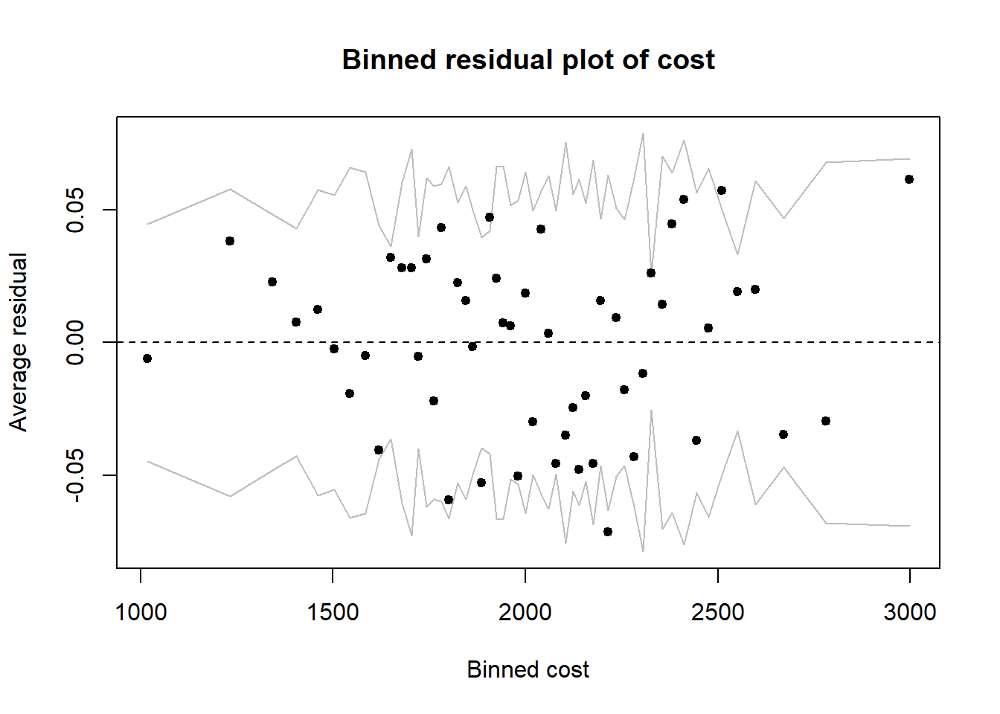
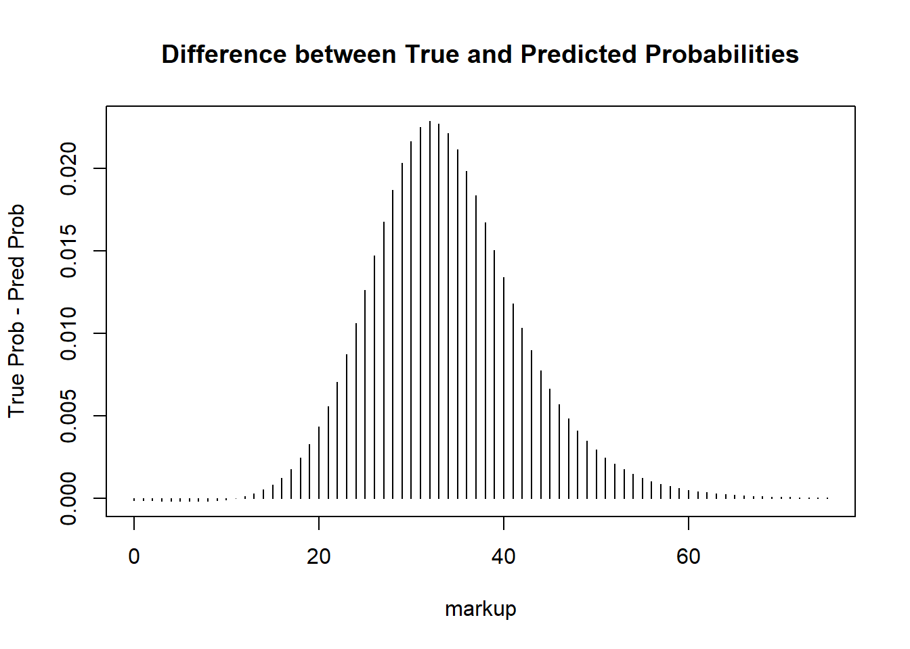

library(knitr)
library(kableExtra)
library(arm)
library(gtsummary)
library(dplyr)
library(ggplot2)Logistic Regression Analysis Example: Optimizing Expected Returns
Machine Learning
Logistic Regression
Optimization
Last Update: January 07, 2026
Introduction
This will be the one of the first in a series of example analyses I plan to post online to showcase my statistical technical knowledge as well as document some interesting problems I have come across in my experience. I specifically want to focus on what and why I do things over the course of an analysis rather than the how I do the analysis. As such, I will assume some familiarity with the statistical tools and code presented here and generally keep theoretical discussion at a higher level.
The article is organized into the following parts:
A basic introduction of the logistic regression model and its comparison to other machine learning models
A simulated example detailing the workflow to build a logistic regression model
Methods to leverage the logistic regression model to optimize some target goal
Discussion of how to approach practical problems when the data is less than ideal
Logistic Regression
Logistic regression is one of the fundamental tools of machine learning and statistics and is actually one of the more powerful tools when one has enough time to go that extra mile and fine tune the model to the data. First I’ll just state the mathematical formula for logistic regression beginning with the data model:
\(Y_i|\pi_i \sim Bernoulli(\pi_i)\)
where \(i\) refers to the data sample index (think of a row in your data table), \(Y_i\) is whether “success” is observed for sample \(i\), and \(\pi_i\) is the probability of success for the \(i\)-th subject. In typical applications, \(Y_i\) is coded such that 0 means “failure” and 1 means “success”. Now we can move on to the regression part of the model between the log-odds and the covariates of interest:
\(\log(\frac{\pi_i}{1-\pi_i}) = \pmb x_i \pmb \beta\)
where \(\pmb x_i\) is a vector of covariates that you think explain the probability of success and \(\pmb \beta\) is the vector of weights that indicate how strongly they contribute to the log-odds of success. When estimating the logistic regression model the \(\pmb \beta\) coefficients are the main parameters of interest (as \(\pi_i\) is derived from \(\pmb \beta\)). The reason we call it “logistic” regression is because \(\log(\frac{x_i}{1-x_i})\) is the inverse of the logistic function.
The assumptions of the model are as follows:
The outcome is a binary random variable, specifically a Bernoulli1 random variable.
The independent/explanatory variables (I’ll commonly refer to these as covariates) have a linear relationship with the log-odds of “success”. The linearity here refers to the beta parameters, for example one may include an \(x^2\beta\) term in the model as the beta parameter has a power of 1.
Observations are independent of each other
No multicollinearity between covariates. For any single covariate, the other covariates in the model don’t perfectly describe that covariate.
No complete separation. In other words, the covariates cannot perfectly predict binary outcome.
Logistic regression compared to other machine learning models
The important distinction between logistic regression and other machine learning models is that the statistical theory on the model parameters is well understood. For each of the \(\beta\) parameters in our model, we know the statistical properties to allow inference through p-values or confidence intervals. Logistic regression is still a tool used today to understand, or infer, the relationship between a binary outcome and other data collected when statistical evidence is required to validate any findings.
Although in most real-world scenarios the other machine learning models perform better in terms of predictiveness, logistic regression can sometimes still be a better model in terms of predictiveness. In my experience through classes and work projects, a logistic regression model is actually superior to the more sophisticated machine learning techniques of Gradient Boosted Trees and Random Forests under a few scenarios with respect to the AUC (area under the curve) performance metric.
The first scenario I’ve come across is when the sample size is relatively small. The machine learning techniques tend to work very well when there is more data to help effectively learn the functional relationship between the data you have and the target outcome. I would say this would be the situation when your sample size is in the magnitude of a few hundreds or less. After that point, other machine learning techniques perform at their expected capacity.
The second scenario where logistic regression can prove better than tree based methods is if one is willing to both select the covariates that strongly relate to the outcome of interest and also identify how each covariate functionally relates to the outcome. To expand on what I mean by “how each covariate functionally relates to the outcome”, some examples of functional relationships are the usual linear relationship, quadratic relationship, or sinusoidal relationship. In mathematical terms you can propose the following models:
\(Linear: \log(\frac{\pi_i}{1 - \pi_i}) = x_i\beta\)
\(Quadratic: \log(\frac{\pi_i}{1 - \pi_i}) = x_i\beta_1 + x_i^2\beta_2\)
\(Sinusoidal: \log(\frac{\pi_i}{1 - \pi_i}) = sin(x_i)\beta\)
Choosing a functional relationship alone produces infinite possibilities for one to sort through in addition to just choosing which covariates to include in one’s analysis. The strength of tree based approaches is that they learn these relationships with enough data, but of course the tree won’t be as accurate as if one were to explicitly identify that “true” relationship when training a logistic regression. However, identifying the “true” functional relationship between the outcome and covariates is rather impractical when one has many different covariates to consider at once. So once again, when the data becomes sufficiently large, it is more practical to use a Gradient Boosted Tree model or Random Forest model.
The advantages and shortfalls of logistic regression compared to other machine learning techniques naturally extend to any generalized linear model such as linear regression. To be clear, I am NOT saying that in these scenarios generalized linear models will ALWAYS surpass the newer machine learning models and algorithms, but rather that these scenarios ALLOW generalized linear models to shine just as well, if not better, than their other machine learning counterparts in terms of predictiveness.
A Novel Application Problem
Suppose that one is starting an online clothing store selling clothes, shoes, and accessories. They have the production cost of each product and wish to know what markup percentage is optimal for generating the most revenue. The data is set up such that we have many offers for products on sale for different markup percentages and it is recorded whether the sale was made or not. From past data, it is plausible that the type of product (clothes, shoes, accessories) has an affect on whether a sale is made.
Defining and estimating the optimal markup percentage is the novel part of the analysis that I think differentiates this analysis from typical logistic regression analyses. If the problem seems somewhat uninspiring, I obfuscated the real application for privacy reasons. This simplified problem does target the core methods and ideas for that application.
Before jumping into the analysis or looking at the data, it is imperative to decide whether the analysis is attempting to optimize prediction or inference. Although inference and prediction are similar goals and a way Because of the optimization scheme I outline in a later section, I believe having an unbiased estimate of \(\pi_i\) and \(\beta_{markup}\) is the main goal, so I interpret this as predominantly an inference problem because of that.
Simulating toy data
Before proceeding with the analysis we shall simulate a toy data set in R that will fit the problem. We will use the following logistic regression model to simulate data:
From this set up, we can propose the following logistic regression model:
\[ \log(\frac{\pi_i}{1 - \pi_i}) = \beta_0 + x_{markup} * \beta_{markup} + x_{cost} * \beta_{cost} + x_{type=shoes} * \beta_{type=shoes} + x_{type = clothes}*\beta_{type = clothes} \]
where \(x_{markup}\) is the markup percentage above 0 (above 100 is allowed), \(x_{cost}\) is cost in dollars, \(x_{type=shoes}\) is 1 when product \(i\) is shoes and 0 otherwise, and similarly \(x_{type = clothes}\) is 1 when product \(i\) is clothes and 0 otherwise. When product \(i\) is accessories, both \(x_{type=shoes}\) and \(x_{type = clothes}\) are 0. The way that \(x_{type}\) is encoded is known as the dummy variable encoding common in statistics (which is different from the one-hot encoding more prevalent in the machine learning field). The outcome of interest \(Y_i\) is a binary variable where 1 indicates the product was sold and 0 the product was not sold, and it follows that \(\pi_i\) is the probability that product \(i\) is sold or not. To clarify about the \(x_{markup}\) covariate, if \(x_{markup} = 20\) then the product was marked up \(20\%\).
I chose the values for true parameters \(\pmb \beta\) that I felt gave a good spread of the true probabilities while also being representative of the expected behavior in the example problem described to me. I arbitrarily chose a decently large sample size of 3000 to ensure proper estimation.
## True parameter values
set.seed(2013)
sample_size <- 3000
true_beta <- c(2, # intercept
-0.2, # markup
0.002, # cost
1, # type=clothes
1.5 )# type=shoes
### Simulate data
type <- sample(c("accessories", "clothes", "shoes"),
size = sample_size,
replace = TRUE,
prob = c(0.3, 0.5, 0.2))
cost <- rnorm(sample_size, mean = 2000, sd = 400)
markup <- runif(sample_size, min = 20, max = 120)
## make sure markup and cost are above 0
markup <- ifelse(markup <= 0, 10, markup)
cost <- ifelse(cost <= 0, 2000, cost)
# convert type into a factor variable to prepare for analysis
type <- factor(type, levels = c("accessories", "clothes", "shoes"))
x_df <- data.frame(markup = markup, cost = cost, type = type)
# get x_matrix
x_matrix <- model.matrix(~ 1 + markup + cost + type, data = x_df)
#simulated log-odds per person
log_odds <- x_matrix %*% true_beta
#convert log_odds to probabilities
inverse_logit <- function(x){(1 + exp(-x))^-1}
true_probs <- inverse_logit(log_odds)
# get the outcome
sold <- rbinom(sample_size, 1, true_probs)
x_df$sold <- sold
# x_df$true_probs <- c(true_probs)
# x_df$true_log_odds <- c(log_odds)Here are the first few rows of the data set to get an idea of how the data is organized:
head(x_df, 5) %>%
kable() %>%
kable_styling()| markup | cost | type | sold |
|---|---|---|---|
| 106.39550 | 2233.739 | clothes | 0 |
| 34.87069 | 1786.943 | shoes | 1 |
| 42.20465 | 1646.098 | accessories | 0 |
| 21.46863 | 1793.615 | accessories | 1 |
| 42.81934 | 2247.883 | clothes | 0 |
Example Logistic Regression Analysis
Quick Exploratory analysis of the Data Set
When starting an analysis, it’s important to first summarize and get a feel of the data. This is a useful and important step as it informs what are reasonable models for the data and indicates the quality of the data.
x_df %>%
tbl_summary(
include = c(markup, cost, type, sold),
type = list(all_continuous() ~ "continuous2"),
statistic = list(
all_continuous() ~ c("{mean} ({sd})", "{median} ({p25}, {p75})", "[{min}, {max}]")
),
by = type)
x_df %>%
tbl_summary(
include = c(markup, cost, sold),
type = list(all_continuous() ~ "continuous2"),
statistic = list(
all_continuous() ~ c("{mean} ({sd})", "{median} ({p25}, {p75})", "[{min}, {max}]")
),
by = sold)| Characteristic | accessories N = 8711 |
clothes N = 1,5251 |
shoes N = 6041 |
|---|---|---|---|
| markup | |||
| Mean (SD) | 70 (28) | 68 (29) | 69 (29) |
| Median (Q1, Q3) | 70 (45, 93) | 67 (43, 92) | 68 (44, 92) |
| [Min, Max] | [20, 120] | [20, 120] | [20, 120] |
| cost | |||
| Mean (SD) | 1,990 (386) | 2,022 (404) | 2,014 (404) |
| Median (Q1, Q3) | 1,984 (1,731, 2,246) | 2,033 (1,750, 2,297) | 2,006 (1,734, 2,305) |
| [Min, Max] | [712, 3,263] | [533, 3,587] | [688, 3,153] |
| sold | 82 (9.4%) | 242 (16%) | 118 (20%) |
| 1 n (%) | |||
| Characteristic | 0 N = 2,558 |
1 N = 442 |
|---|---|---|
| markup | ||
| Mean (SD) | 75 (26) | 30 (8) |
| Median (Q1, Q3) | 76 (54, 96) | 28 (24, 35) |
| [Min, Max] | [21, 120] | [20, 57] |
| cost | ||
| Mean (SD) | 1,992 (395) | 2,123 (404) |
| Median (Q1, Q3) | 1,991 (1,728, 2,258) | 2,129 (1,827, 2,405) |
| [Min, Max] | [533, 3,587] | [1,023, 3,353] |
plot(markup, cost,
main = "cost vs markup",
ylab = "cost of production ($)",
xlab = "markup of product (%)")
The first table summarizes the different covariates and outcome by type. Inspecting the average and quartiles of markup and cost between the different types, we don’t notice any difference in the distributions. This implies that type is associated with neither the cost nor markup, which is a best case scenario for a logistic regression analysis. The proportion of successful sales is different among the product types with clothes and shoe products selling at a higher rate than the accessories. This implies that there may be an association between type and product sales. Clearly, there is an imbalance in the distribution of type in the data set, but we have enough cases of each product type such that including type in the logistic regression model shouldn’t be a problem.
The second table summarizes markup and the cost variables by whether the product sold (the 1 group) or not (the 0 group). Comparing these two groups, we can clearly see that markup is lower in the groups that sold and indicates a negative association between sales and markup. The distribution of cost shifts about 100 dollars higher in the group that sold and thus suggests a positive association between cost and sales.
Finally, in the scatter plot comparing cost and markup, we observe random spread of the points. There is no indication of a linear or other functional relationship between markup and cost, which is an ideal scenario for logistic regression.
Building a logistic regression model
Fitting a logistic regression model in R is a simple one line of code. Since we know what the true generating parameters are above, let’s double check our work by comparing the fitted values to the true parameters.
fit <- glm(sold ~ 1 + markup + cost + type,
data = x_df,
family = binomial)
ci <- confint(fit)Waiting for profiling to be done...result <- data.frame(truth = true_beta,
est = coef(fit),
ci_lwr = ci[,1],
ci_upr = ci[,2])
kable(result, digits = 4) %>%
kable_styling()| truth | est | ci_lwr | ci_upr | |
|---|---|---|---|---|
| (Intercept) | 2.000 | 1.7716 | 0.7778 | 2.7816 |
| markup | -0.200 | -0.2045 | -0.2272 | -0.1837 |
| cost | 0.002 | 0.0021 | 0.0017 | 0.0026 |
| typeclothes | 1.000 | 0.8584 | 0.4595 | 1.2656 |
| typeshoes | 1.500 | 1.8053 | 1.3052 | 2.3199 |
As expected with this rather large sample size, the estimates are fairly close to the true values and are well within the 95% confidence intervals. All of the parameter estimates are statistically significant as 0 is not within the confidence intervals, so this is a convincing model. At this step, one would normally interpret these values as odds ratios, but that is not the goal of this analysis, so I will skip the interpretation.
When building a logistic regression model, one usually has to consider a few different models to find the best fit to the data. Let’s consider three other logistic regression models. One without type in the model but all other variables in the model:
\[ \log(\frac{\pi_i}{1 - \pi_i}) = \beta_0 + x_{markup} * \beta_{markup} + x_{cost} * \beta_{cost} \]
a second model with a quadratic term for markup and including all the other variables:
\[ \log(\frac{\pi_i}{1 - \pi_i}) = \beta_0 + x_{markup} * \beta_{markup} + x_{markup}^2 * \beta_{markup^2} + x_{cost} * \beta_{cost} + x_{type=shoes} * \beta_{type=shoes} + x_{type = clothes}*\beta_{type = clothes} \]
and finally a simple model with just markup:
\[ \log(\frac{\pi_i}{1 - \pi_i}) = \beta_0 + x_{markup} * \beta_{markup} \]
There are many model selection criteria to choose from and which one to use depends on the goal of the analysis. In this application, the goal is estimation and inference, so I would personally advocate for the Bayesian Information Criterion (BIC). The BIC is a quantity that expresses how well the proposed model fits the data while also balancing how many parameters are in a model. More parameters in a model results in a better fit to the data but too many parameters results in overfitting. The problem with an overfit model is the lack of generalizability to new data. Please refer to the BIC() documentation to see the formula for its calculation. BIC favors having less parameters in a model as compared to it’s counterpart the Akaike Information Criterion (AIC). Therefore, the BIC is sometimes the preferred model selection criterion when the goal is to identify what covariates to go into a model.
Lower values of BIC indicate a better statistical model for the data. A difference of at least 2 is the typical threshold to consider one model superior the other. For differences of less than 2 the models are about equivalent and the statistician must decide which model is superior.
fit1 <- glm(sold ~ 1 + markup + cost,
data = x_df,
family = binomial)
fit2 <- glm(sold ~ 1 + markup + I(markup^2) + cost + type,
data = x_df,
family = binomial)
fit3 <- glm(sold ~ markup, data = x_df, family = binomial)
df_model_selection <- data.frame(model = c("True_model", "no_type", "quadratic_markup", "Simple_markup"),
bic = c(BIC(fit), BIC(fit1), BIC(fit2), BIC(fit3))
)
df_model_selection %>%
kable(digits = 2, caption = "Smaller BIC indicates better model") %>%
kable_styling()| model | bic |
|---|---|
| True_model | 927.72 |
| no_type | 964.57 |
| quadratic_markup | 935.31 |
| Simple_markup | 1046.51 |
Upon inspecting the BIC values, the true model is unsurprisingly the lowest BIC and thus the best model. Disregarding our knowledge of the true data generating model, the model chosen at this step strongly translates the trends observed in the exploratory data analysis step, and thus highlights the importance of exploring the data before building models. The simple model with just markup is clearly the worst model with the highest BIC, so although the simple model would drastically simplify our optimal estimation of \(\pi_i\) in the next step, the data indicates a more complex relationship between the outcome and covariates is more appropriate.
Although we only inspect 4 models here, usually one would explore many more models and spend the bulk of their time trying to figure out the best model. More complex relationships like interactions and different functional transformations of continuous variables could be considered. Based on the exploratory analysis, this does not seem necessary in this analysis.
Assessing Model Assumptions
Assessing whether the model assumptions are violated is often overlooked when fitting a logistic regression model. The main ones to assess are linearity of covariates (assumption 2), independent sampling (assumption 3), and multicollinearity (assumption 4). Perfect separation (assumption 5) is normally a warning from R if that occurs.
Based on the exploratory analysis earlier, multicollinearity is not likely not an issue in this data set. We know this for a fact because I generated the data independently. The exploratory analysis revealed that there wasn’t any clear relationship between pairs of the covariates, and all of the parameters in the model are statistically significant. These are both great signs that multicollinearity is not present. However, to formally check for multicollinearity, one can check the Variance Inflation Factors (VIFs) in the covariates. I’ll skip this step for now but one can read more on VIF theory here: https://online.stat.psu.edu/stat462/node/180/ and how to calculate it using the car package in R here: https://www.r-bloggers.com/2023/12/exploring-variance-inflation-factor-vif-in-r-a-practical-guide/.
I will note though that if one adds higher order terms in the regression, for example
\[ \log(\frac{\pi_i}{1 - \pi_i}) = \beta_0 + x_{markup} * \beta_{markup} + x_{markup}^2 * \beta_{markup^2} \] then instead of the VIF one will need to inspect the Generalized Variance Inflation Factor (GVIF).
The hardest assumption to verify is the linearity assumption. This only applies to continuous covariates which are markup and cost in this example. We can use the binnedplot function in the arm package to assess this. What this function does is bin or discretize the continuous variable into equally spaced segments. Within each segment, calculate the residual for the observations via:
\[ residual_i = y_i - \hat \pi_i \] where \(\hat \pi_i\) is calculated from a proposed logistic regression model. We inspect the plot to make sure that the residuals are randomly scattered around the \(y = 0\) horizontal line, there is no pattern in the residuals, and that at most ~5% of the residuals are outside of the confidence interval lines.
These binned residuals plots assume a large sample size for the statistical properties to hold. Specifically if the sample size is large within each bin, then the expected value of these residuals is 0 with known standard errors due to the Lindeberg-Feller central limit theorem. My personal rule-of-thumb is at least 30 observations to be reasonably confident in the approximation, but the more the better. Unfortunately, the binned plots from the arm package don’t throw warnings when the bins have small sample size, so some caution is needed when interpretting these plots. In addition to large sample sizes, for values of \(\hat \pi_i\) close to 0 or 1, the statistical theory does not hold, so bins with mostly very low or very high predicted values of \(\hat \pi_i\) are not as informative.
## example on how the binned residual plot is constructed
rng <- range(x_df$cost) # min, max of markup
## break up range into 3 equal parts
breakpoints <- seq(from = rng[1],
to = rng[2],
by = diff(rng/3))
midpoints <- (breakpoints[-1] + breakpoints[-length(breakpoints)]) / 2
res <- x_df$sold - predict(fit, type = 'response')
res_df <- data.frame(res = res,
bp = cut(x_df$cost, breaks = breakpoints))
res_ave <- aggregate(res ~ bp,
data = res_df,
FUN = mean)
plot(x = x_df$cost, y = res,
xlab = "cost",
ylab = "Residuals: observed - predicted",
main = "How a binned residual plot is constructed",
pch = 16)
points(x = midpoints, y = res_ave$res,
pch = 16, cex = 1.2,
col = 'red')
abline(v = breakpoints, col = 'red')
legend("topright",
legend = c("observed_residual",
"average_residual"),
col = c('black', 'red'),
pch = 16)
Let’s look at several binned residual plots to assess whether our proposed model is reasonable.
res <- residuals(fit, type = "response")
binnedplot(x = fitted(fit),
y = res,
nclass=NULL,
xlab="Expected Values",
ylab="Average residual",
main="Binned residual plot")
binnedplot(x = x_df$markup,
y = res,
nclass=NULL,
xlab="Binned markup",
ylab="Average residual",
main="Binned residual plot of markup")
binnedplot(x = x_df$cost,
y = res,
nclass=NULL,
xlab="Binned cost",
ylab="Average residual",
main="Binned residual plot of cost")
Optimizing the Expected Returns (Expected Revenue)
Relationship between \(x_{markup}\) and \(\pi_i\)
Now that we have decided on a logistic regression model, let’s explore the relationship between markup and the probability of selling the product. The relationship between markup and the log-odds might be linear, but when we invert the problem to get the relationship between markup and the probability it is certainly non-linear. To produce this non-linear relationship, we can invert the log-odds back to the probability scale through the following formula:
\[ \pi_i = (1 + \exp[-(\beta_0 + x_{markup} * \beta_{markup} + x_{cost} * \beta_{cost} + x_{type=shoes} * \beta_{type=shoes} + x_{type = clothes}*\beta_{type = clothes})])^{-1} \]
We are specifically interested in how markup relates to the probability of selling, but we have the other data variables in the formula. Before exploring how the probability of selling changes over a range of values for markup, it is pertinent to choose some representative values for cost and type. To start with, let’s set the cost level to be the observed average cost level and let type be the most common type in the data set to provide a curve.
## there isn't a mode function in base R
getMode <- function(x){
lx <- levels(x)
ux <- unique(lx)
factor(ux[which.max(tabulate(match(lx, ux)))], levels = lx)
}
range_markup <- seq(from = 0, to = 75, by = 1)
mode_type <- getMode(x_df$type)
mean_cost <- mean(x_df$cost)
new_x_df <- data.frame("markup" = range_markup,
"cost" = mean_cost,
"type" = mode_type)
preds <- predict(fit, newdata = new_x_df, se.fit = TRUE)
preds_ci_upr <- preds$fit + qnorm(0.975)*preds$se.fit
preds_ci_lwr <- preds$fit - qnorm(0.975)*preds$se.fit
probs_df <- data.frame(pred_prob = inverse_logit(preds$fit),
pred_prob_lwr = inverse_logit(preds_ci_lwr),
pred_prob_upr = inverse_logit(preds_ci_upr),
markup = range_markup)
true_probs <- model.matrix(~ markup + cost + type, data = new_x_df) %*% true_beta
probs_df$true_probs <- inverse_logit(true_probs)
ggplot(probs_df) +
## probability curve predicted from logistic regression in black
geom_line(aes(x = markup, y = pred_prob)) +
## 95% wald CI in red
geom_line(aes(x = markup, y = pred_prob_upr), col = "red") +
geom_line(aes(x = markup, y = pred_prob_lwr), col = "red") +
## probability curve using true values will be in blue
geom_line(aes(x = markup, y = true_probs), col = "blue") +
ggtitle(paste0("Probablity of Selling Product vs markup percentage"),
subtitle = paste0("type = ", mode_type[1],
" cost = ",
round(mean_cost[1], digits = 2)
)
) +
labs(x = "markup (%)", y = "Probability of Selling Product")
As expected, due to how well our estimates of the parameters are, the estimated probability curve in black is mostly overlapped by expected probabilities calculated from the true parameters in blue. As we can see from the graph above, the probability of selling decreases as markup increases. This isn’t surprising given that the true parameter for markup is -0.02.
Let’s plot the differences between the true and predicted probabilities to really show how small the difference in magnitude is. We can see that the probabilities only differ at most by 0.02. Depending on the application context, this can be a meaningful difference or not, but for this application let’s assume that an underestimation of 0.02 is a reasonably close estimate.
plot(x = probs_df$markup,
y = probs_df$true_probs - probs_df$pred_prob,
type = 'h',
ylab = "True Prob - Pred Prob",
xlab = "markup",
main = "Difference between True and Predicted Probabilities")

Calculating the Optimal markup
We can propose the following function to express a balance between optimizing cost markup while increasing the probability of successfully selling the product:
\(f(x_{markup}) = (1 + \frac{x_{markup}}{100})x_{cost} \pi_i\)
This function is derived from the idea of the expected total revenue generated by a new product. The new products total revenue is expressed as \((1 + \frac{x_{markup}}{100})*x_{cost}\) and the expected value of a new observation \(Y_i\) is \(\pi_i\) because \(Y_i\) is a Bernoulli random variable (see appendix for small derivation). Thus, the expected total revenue generated from this product is the multiplication of these two quantities.
The calculation of \(\pi_i\) depends on \(x_{markup}\) and \(x_{cost}\).
expected_return <- function(markup, cost, type, fit, log = FALSE){
new_data <- data.frame(markup = markup,
cost = cost,
type = type)
# if(markup < 0){
# return(-Inf)
# }
if(log){
### doing optimization on the log scale is more stable, if markup > 0
log(1 + markup/100) + log(cost) +
log(predict(fit, newdata = new_data, type = "response"))
}else{
(1 + markup/100)*cost * #total sale price
predict(fit, newdata = new_data, type = "response") #prob success
}
}
optimal_vals <- optim(par = 50,
fn = expected_return,
method = "BFGS",
control = list(fnscale = -1), # do maximization not minimization
# These params don't change
cost = mean_cost[1], type = mode_type[1], fit = fit
)
if(optimal_vals$convergence != 0){
stop("The numerical optimization did not converge")
}else{
new_data <- data.frame(markup = optimal_vals$par,
cost = mean_cost[1],
type = mode_type[1])
optimal_prob_success <- inverse_logit(predict(fit, new_data))
optimal_df <- data.frame(optimal_markup = optimal_vals$par,
expected_total_cost = optimal_vals$value,
type = mode_type[1],
cost = mean_cost[1],
prob_success = optimal_prob_success)
kable(optimal_df, digits = 3, align = 'c') %>%
kable_styling()
}| optimal_markup | expected_total_cost | type | cost | prob_success |
|---|---|---|---|---|
| 14.48 | 2203.908 | accessories | 2011.027 | 0.957 |
From this analysis, we find that for an accessory product that costs of $2011.03 to produce, the optimal markup is about 14.48 percent. This results in a total revenue generated of $2203.91.
Although our formula calculates an optimal markup of 14.48 percent, we need to keep in mind that the range of markup in the data set are values between 20 and 120 percent. Thus, a markup of 14.48 percent is outside the region covered by the data. I would suggest collecting more data in this range before widely adopting this decision rule.
In this section we only looked at one specific combination of covariates. Of course, we may want to consider cases with combinations of product costs and product types. To explore these different scenarios more easily, I’ve created a Rshiny dashboard that’ll be linked below when it’s done.
Hypothetical Impact of Optimal Markup strategy
Let’s assess the business impact of this optimal markup strategy is in terms of two important outcomes:
The change in successful sales compared to the observed sales data
The change in revenue generated compared to the observed revenue
For each point in our data set, we will substitute the observed optimal markup strategy with the optimal markup and check the change in sales and revenue.
calc_optimal_markup <- function(cost, type, fit){
optim(par = 50,
fn = expected_return,
method = "BFGS",
control = list(fnscale = -1), # do maximization not minimization
# These params don't change
cost = cost, type = type, fit = fit
)
}
optimal_markups <- mapply(calc_optimal_markup,
cost = x_df$cost,
type = x_df$type,
MoreArgs = list(fit = fit))
optimal_x_df <- x_df
optimal_x_df$markup <- unlist(optimal_markups[1,])
hist(optimal_x_df$markup)
hypothetical_probs <- predict(fit,
newdata = optimal_x_df,
type = 'response')
est_probs <- predict(fit, newdata = x_df, type = 'response')
set.seed(2013)
expected_results <- replicate(5000,
expr = {
hypothetical_success <- rbinom(sample_size, 1, hypothetical_probs)
c(change_sales = sum(hypothetical_success) - sum(x_df$sold),
change_rev = sum(hypothetical_success * (1 + optimal_x_df$markup/100)*x_df$cost) -
sum(x_df$sold * (1 + x_df$markup/100)*x_df$cost)
)
})
obs_revenue <- sum(x_df$sold * (1 + x_df$markup/100)*x_df$cost)
optimal_results <- data.frame(ave_change_sales = mean(expected_results[1,]),
ave_change_revenue = mean(expected_results[2,]),
ave_percent_change_sales = mean(expected_results[1,])/sum(x_df$sold),
ave_percent_change_revenue = mean(expected_results[2,]) / obs_revenue)
optimal_results ave_change_sales ave_change_revenue ave_percent_change_sales
1 2433.894 5664458 5.506547
ave_percent_change_revenue
1 4.6332Discussion
Easy to extend to
Appendix: Deriving expected revenue formula
First, we calculate that \((1 + \frac{x_{markup}}{100})x_{cost}\) would be the sales price of the item (ignoring any taxes).
Next let’s derive a simple random variable \(Z_i\) to represent the revenue generated from each sale. Consider the random variable \(Z_i\) which is a transformation of our previous outcome variable \(Y_i\):
\[Z_i = (1 + \frac{x_{markup}}{100})x_{cost} Y_i\]
A straightforward application of deriving shows that
\[\mathbb E(Z_i) = (1 + \frac{x_{markup}}{100})x_{cost} \mathbb E(Y_i) = (1 + \frac{x_{markup}}{100})x_{cost} \pi_i\]
We have a (maximum-likelihood) estimate of \(\pi_i\) that we will denote as \(\hat \pi_i\). Thus our (maximum-likelihood) estimate of \(E(Z_i)\) is
\(\widehat{\mathbb E(Z_i)} = (1 + \frac{x_{markup}}{100})x_{cost} \hat \pi_i\).
For the more statistically rigorous, the expectations here are conditional on the covariates in the logistic regression model and \(\widehat{\mathbb E(Z_i)}\) is a maximum-likelihood estimator of \(\mathbb E(Z_i)\).
Session Info and Bibliography
sessionInfo()R version 4.5.2 (2025-10-31 ucrt)
Platform: x86_64-w64-mingw32/x64
Running under: Windows 11 x64 (build 26100)
Matrix products: default
LAPACK version 3.12.1
locale:
[1] LC_COLLATE=English_United States.utf8
[2] LC_CTYPE=en_US.UTF-8
[3] LC_MONETARY=English_United States.utf8
[4] LC_NUMERIC=C
[5] LC_TIME=English_United States.utf8
time zone: Pacific/Honolulu
tzcode source: internal
attached base packages:
[1] stats graphics grDevices utils datasets methods base
other attached packages:
[1] ggplot2_4.0.1 dplyr_1.1.4 gtsummary_2.5.0 arm_1.14-4
[5] lme4_1.1-38 Matrix_1.7-4 MASS_7.3-65 kableExtra_1.4.0
[9] knitr_1.51
loaded via a namespace (and not attached):
[1] gt_1.2.0 sass_0.4.10 tidyr_1.3.2 generics_0.1.4
[5] xml2_1.5.1 stringi_1.8.7 lattice_0.22-7 digest_0.6.39
[9] magrittr_2.0.4 evaluate_1.0.5 grid_4.5.2 RColorBrewer_1.1-3
[13] cards_0.7.1 fastmap_1.2.0 jsonlite_2.0.0 purrr_1.2.0
[17] viridisLite_0.4.2 scales_1.4.0 textshaping_1.0.4 abind_1.4-8
[21] reformulas_0.4.3 Rdpack_2.6.4 cli_3.6.5 rlang_1.1.6
[25] rbibutils_2.4 litedown_0.9 commonmark_2.0.0 splines_4.5.2
[29] base64enc_0.1-3 withr_3.0.2 yaml_2.3.12 otel_0.2.0
[33] tools_4.5.2 nloptr_2.2.1 coda_0.19-4.1 minqa_1.2.8
[37] boot_1.3-32 vctrs_0.6.5 R6_2.6.1 lifecycle_1.0.4
[41] stringr_1.6.0 fs_1.6.6 htmlwidgets_1.6.4 pkgconfig_2.0.3
[45] gtable_0.3.6 pillar_1.11.1 glue_1.8.0 Rcpp_1.1.0
[49] systemfonts_1.3.1 xfun_0.55 tibble_3.3.0 tidyselect_1.2.1
[53] rstudioapi_0.17.1 farver_2.1.2 htmltools_0.5.9 nlme_3.1-168
[57] labeling_0.4.3 rmarkdown_2.30 svglite_2.2.2 compiler_4.5.2
[61] S7_0.2.1 markdown_2.0 Footnotes
There is an extension of logistic regression to group level data where the outcome is the number of successes observed and is modeled as a binomial random variable.↩︎